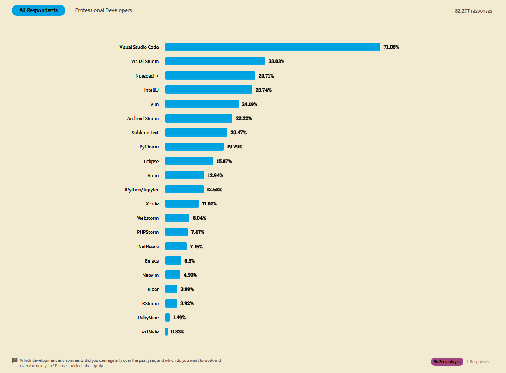
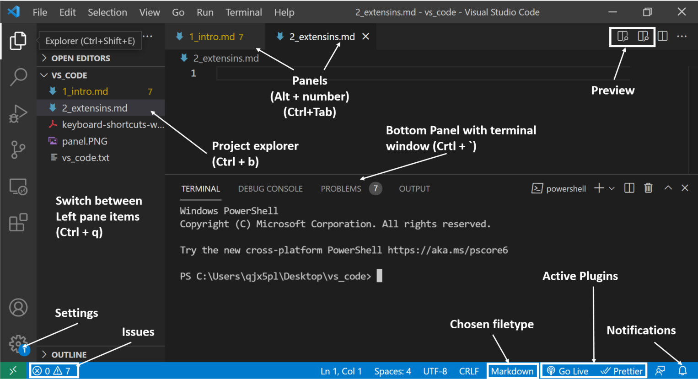
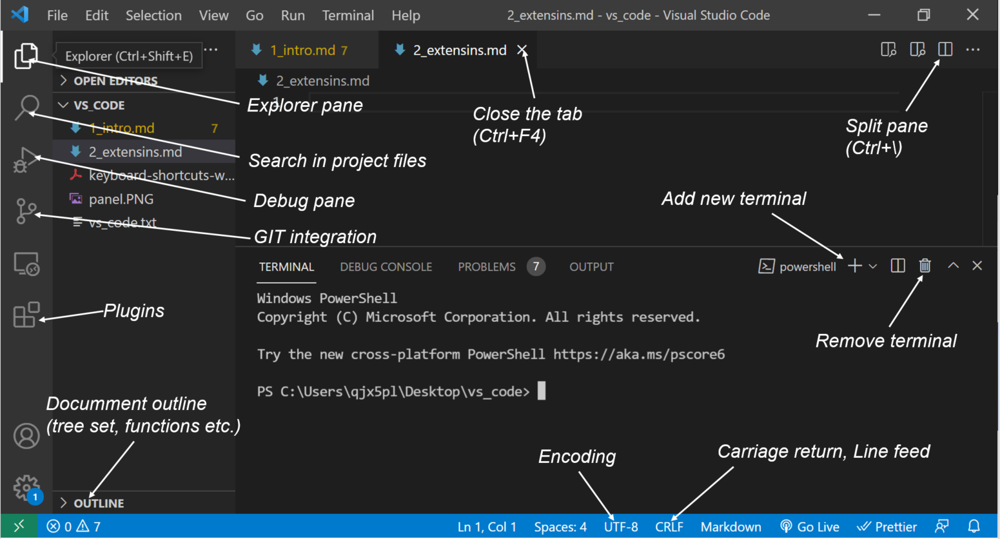
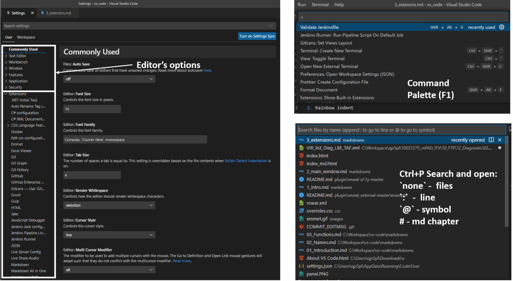
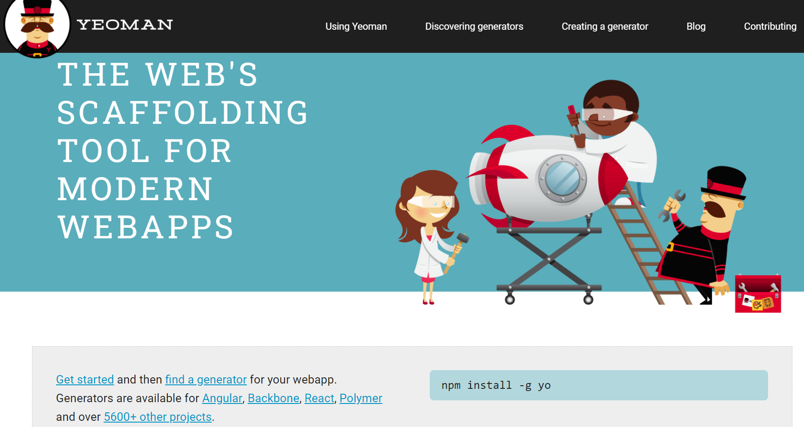
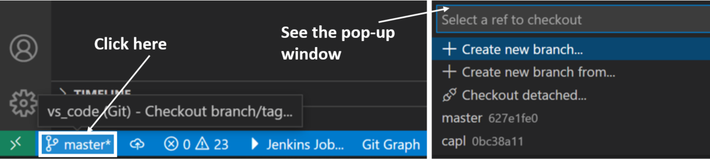
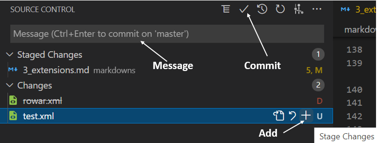

About VS Code.
Prepared by:
Darek Łuczyński
Introduction to VS Code
What is VS Code?
VS Code, Visual Studio Code, is a: free, ‘lightweight’, code optimized, cross platform (Windows, OS X, and Linux), open-source editor, with extensive free plugins ecosystem from … Microsoft.
There is built-in support for almost all programming languages, including but not limited to HTML, CSS, TypeScript, Java, C++, PHP, Go, SQL, Objective-C, Dotnet Core, and Ruby.
Vs Code is released with support for IntelliSense (an intelligent code completion system), debugging, and Git integration.
Links to VS Code:
What is VS Code
The app is built using an open source desktop application framework developed by GitHub called Electron.
Electron uses HTML5, JavaScript, and other Web technologies, using Chromium for presentation, and io.js (a fork of node.js) to tie it all together. The Code editor is a version of Monaco project.
User reception
- In the 2016 Developers Survey of Stack Overflow Visual Studio Code ranked #13 among the top popular development tools, with only 7% of the 47,000 respondents using it.
- In the 2018 Visual Studio Code achieved the #1 spot, with 35% of the 75,000 respondents using it.
- In the 2019 Developers Survey, Visual Studio Code was also ranked #1, with 50% of the 87,000 respondents using it.
- In the 2021 Developers Survey, Visual Studio Code continues to be ranked #1, with 70% of the 82,000 respondents using it.
User reception

The foundation of success
VS Code is not only editor, can be classed as an integrated development environment (IDE), meaning that developers can write and test code at the same time.
With the addition of extensions, it becomes more than just a code editor. With the right settings, extensions, and configured shortcut keys, it can easily become a full-stack workstation.
Telemetry and Data collection
Visual Studio Code collects usage data and sends it to Microsoft, however this can be disabled. In addition, because of the open-source nature of the application, the telemetry code is accessible to the public. They can see exactly what is collected.
There is no telemetry community project, called VS Codium, the source is available here
Main Panel
Hands On
Prepare your working environment, run command console (press Win+R, type cmd):
# Go to your workspace
cd c:\your_workspace
# to make a dir
mkdir hands_on_code
# go to directory
cd hands_on_code
# initialize git repository
git init
# setup local git config
# it's possible to setup global
# git config --global
git config user.name "Your-Full-Name"
git config user.email "your-email-address"
# checkout the VS Code API
code --help
# to run vs code type
code .
Main window

Main window

Main window

Hands On
Create new file, .gitignore in the code explorer. Add below
content in the file editor.
# Ignore .png files
*.png
# ignore .pdf files
*.pdfOpen bash(git) terminal in VS Code. Make sure that you are in the project folder, write below:
git add .
git commit -m "initial commit"Hands On
Create new file, manifest.md in the code explorer add following
text to the file.
## Info
|Full name|Occupation|Group|Date|
|:--------|:--------:|:---:|---:|
|Darek Łuczyński|Tester|team|put_the_date_here|
## Manifest
I hereby consent to attend this meeting voluntarily, keep calm till the end of it.
# About VS Code
Kraków, Poland, presented on put_the_date_here
## Team links
- [Confluence](https://www.atlassian.com/software/confluence)
- [Jira](https://www.atlassian.com/software/jira)
Click in the middle of <!-- put cursor here --> and hit
Ctrl+Enter. Modify the markdown using Alt+LeftClick on
put_the_date_here, then change Darek Łuczyński to your full name.
Select paragraph # About VS Code and line beneath, then move it to the top of the
file.
Extensions
Extension API
VS Code is built with extensibility in mind. Almost every part of VS Code can be customized and enhanced through the Extension API. In fact, many core features of VS Code are built as extensions and use the same Extension API.
Extensions can be found in extension marketplace and major thing about it is that it’s not limited to just code. There are custom debuggers, code linters, ssh-terminals, prettifies, and DevOps pipeline connections.
Extension API Templates
The extension scaffolding is done by a kickstarter, Yoeman running on node.js.

To start the extension development you need to run VS Code Extension Generator, then follow the api documentation.
npm install -g yo generator-codeMarkdowns
Install bolded extensions:
- Markdown All in One,
- Markdownlint,
- Markdown Preview Enhanced,
- Markdown PDF
Preview the markdown by clicking on the preview icon on the right side.
In the terminal, write below:
# make sure that you are in the project folder
git add .
git commit -m "markdown manifest"Capl extension
Run git bash terminal in VS Code and type following:
git branch capl
git checkout capl
git branch- Capl
- code highlight, autocompletion and snippets.
Copy reference capl file to project folder. Open file and see the first line:
/*@!Encoding:1250*/.
Click on bottom ribbon at UTF-8->Reopen with Encoding-1250>. Observe if
encoding’s changed.
In the file editor write testcase, press tab. See the snippets
(Ctrl+Space). Go to the terminal and run following:
git add .
git commit -m "capl file commit"
git checkout master
git branchVS Code Built-ins
Visual Studio Code has integrated source control management (SCM) and includes Git support in-the-box. However it can be improved with couple of extensions.
Git Extensions. Hint: Try @popular git in
extensions search window.
- Git history, highlights recent commits built into the editor
- Git lens, shows commits, files history stashes
- Git Graph, visualization of git repository
- Gitignore
Using Create new branch ..., create xml branch.

XML Extensions
- XML Tools,
- XML, XML Language Support by Red Hat,
- Auto Rename Tag,
- Auto Close Tag
Copy xml report to hands_on_code folder and open in the editor. Open
Explorer’s pane, see: Outline and XML Document. In
the XML document click on @null, then remove the comment in the editor
and save. Press Ctrl+p and navigate through all symbols.
Add the xml report file to source control, write a message and commit.

XML Extensions
Hands on
-
Press
F1and writeXML Tools: Evaluate XPathchoose:XPath Query, then write:<!-- write --> //testme //testmecase[@timestamp>1005]/testmestep/text() testme/info/info[name='number']/info/text()Observe Output: XPath Results window.
-
Create new tag, see if the closure was created. Rename
<testme>to<mytestme>, see the closing tag changes.
VS Code Built-ins
Emmet snippets and expansion is built right into Visual Studio Code. Emmet is a web-developer’s toolkit that improves
HTML/XML & CSS workflow. To see VS Code built in extensions press Ctrl+Shift+x
and type @builtin.

Make new file issues.xml. In the file press Ctrl+Space and choose
Insert XML declaration, then Tab. Under the declaration paste in
following and press Tab:
<!-- checkout emmet in action -->
head>issue*2>(id#Iss_Test_Name_0x00*3+IssueDet[no="Ticket-" ticket_stat="New" sw="xx.xx.xx"]{Title: My test title })Add issues.xml file to source control, write a message and commit. Checkout branch from xml to master.
Visual Extensions
Install bolded extensions:
- Guides,
- Guides › Active: Width > 1 -> 5 (Active indentation guides rendering width)
- Bracket Pair Colorizer,
- Bracket Pair Colorizer 2,
- Rainbow indent,
- Prettier,
- Material Icon Theme,
- vscode-icons,
- Better comments,
- Code spell checker
Interactive features
- Live Server
- used to trace changes during a web app development.
- Live Share Extension Pack
- ad hoc collaboration with your partner on the same code without the need to sync code or to configure the same development tools, settings, or environment. It gives an access to remote collaboration session up to 30 people.
Paste the URL into a browser’s address or join live share collaboration session in your VS Code.
Log into the live share session, use your MS or Github account. Paste in yours personal
row from info’s table in manifest.md into collaborative
attendance table.
Handy Extensions
- Visual Studio IntelliCode, code auto completion,
- Kite AutoComplete, code auto completion,
- Tabnine, intellisense, code auto completion,
- Bookmarks,
- .run, Code Runner,
- Project Manager,
- settings sync, VS Code settings export to Github Gist
- Code Spell Checker
Other, Python extensions
- Python, basic VS plugin,
- Jupyter,
- Python preview, debug without running the code (static eval),
- Arepl for python, evaluates code during typing,
- Python extension pack,
- Python docstring generator, generates pydocs,
- Github copilot, generates code based on syntax/phrase,
- Python indent, indentation
Other, C# extensions
- C#,
- C# Extensions,
- C# XML Documentation Comments,
- Auto-Using for C#
Other, html css js
- Html tag wrap,
- SVG Viewer,
- Css peek,
- Html css support,
- Es6 snippets,
- Debugger for chrome,
- Path Intellisense